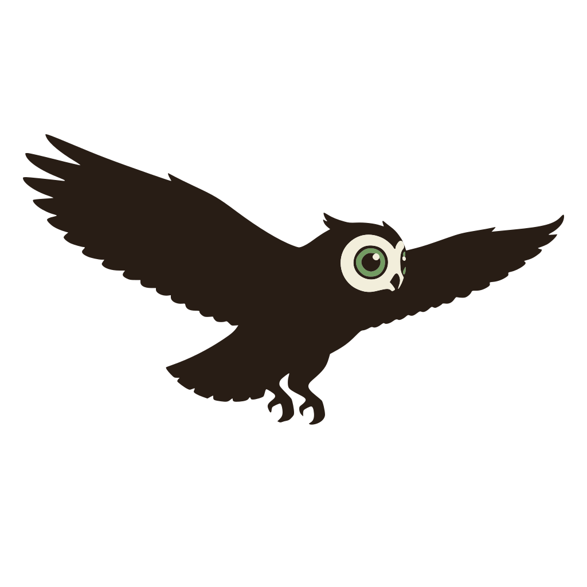
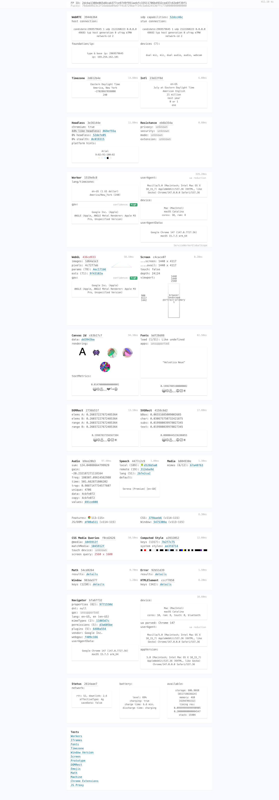
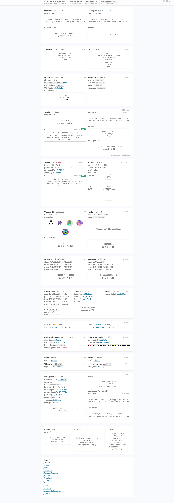

A drop-in stealth Chromium
for Playwright & Puppeteer
No proxies. No JavaScript injection. Real fingerprint virtualization, baked at the source.

How it's different
Most "stealth" plugins inject JavaScript on top of plain Chromium and override navigator.webdriver, screen.width, etc. Detection systems read those right back through the prototype chain — and the JavaScript itself is detectable. Owl Light removes that whole layer:
🔧 Compiled-in spoofing
Patched Blink/V8 hooks for screen, navigator, canvas, WebGL, audio, fonts, timing, and Sec-CH-UA. Pages see authentic values from the real Blink code paths — there's no JavaScript layer to detect.
🦉 5 real-world VM profiles
Each binary ships with macOS, Windows, and Linux profile sets covering recent hardware: M3-class Macs, AMD/Nvidia/Intel GPUs, and Linux distros — selected at launch via --owl-os.
🛡️ Zero lies on creepJS
The workerScope.totalLies counter is 0 across all three OS profiles. navigator.webdriver, headless flags, and CDP artefacts are all neutralised at the source.
⚡ Drop-in replacement
Pass the binary as executablePath in Playwright or Puppeteer launch options. No SDK, no dependency, no proxy — just point and run.
🍎 Notarized for macOS
Signed with our Apple Developer ID and notarized with Apple's notary service. Gatekeeper accepts the binary without a manual override.
📦 Self-contained
One tarball, ~230 MB. No installer, no dependencies, no system fonts required — bundles its own. Works in Docker out of the box.
Install
Single command on macOS or Linux. The script auto-detects your platform and drops the binary in ./bin/owl_light.
# macOS (Apple Silicon) or Linux (amd64/arm64): curl -fsSL https://raw.githubusercontent.com/Olib-AI/owl-light/main/scripts/install.sh | bash # Or download manually: curl -L -o owl_light.tar.gz \ https://github.com/Olib-AI/owl-light/releases/latest/download/owl_light-macos-arm64.tar.gz tar -xzf owl_light.tar.gz
Use it from Playwright
import { chromium } from 'playwright'; const browser = await chromium.launchPersistentContext('', { executablePath: './bin/owl_light', headless: false, args: ['--owl-os=macos', '--owl-chrome-version=147'], }); const page = browser.pages()[0]; await page.goto('https://abrahamjuliot.github.io/creepjs/'); // Open the page console — workerScope.totalLies = 0 ✓
Or from Python with Playwright:
from playwright.async_api import async_playwright async with async_playwright() as p: browser = await p.chromium.launch_persistent_context( user_data_dir="", executable_path="./bin/owl_light", headless=False, args=["--owl-os=windows", "--owl-chrome-version=147"], )
More recipes in examples/ — basic navigation, form login, multi-window, network interception, screenshot capture.
Verified across all three OS profiles
creepJS audit, fresh from the latest release:

--owl-os=macos · workerScope.totalLies = 0
--owl-os=windows · workerScope.totalLies = 0
--owl-os=linux · workerScope.totalLies = 0Owl Light vs. Owl Browser (Enterprise)
| Owl Light · MIT | Owl Browser · Enterprise | |
|---|---|---|
| Source-level fingerprint spoofing | ✓ | ✓ |
| Drop-in for Playwright / Puppeteer | ✓ | ✓ |
| Zero-lies on creepJS | ✓ | ✓ |
| 5 VM profiles per OS | ✓ | 500+ |
| REST API + WebSocket + MCP | — | 170+ tools |
| Built-in vision LLM (Qwen3-VL-2B) | — | ✓ |
| Natural-language automation (NLA) | — | ✓ |
| CAPTCHA solving (text / image / puzzle) | — | ✓ |
| Video recording + live MJPEG stream | — | ✓ |
| TOR integration | — | ✓ |
| 256 isolated parallel sessions / instance | — | ✓ |
| Docker image + React control panel | basic | full |
| SOC2-ready deployment | — | ✓ |
Need more than a binary?
Owl Browser is the full enterprise platform — REST API, WebSocket, MCP server, vision LLM, NLA, CAPTCHA solving, video recording, TOR integration, and 256 isolated sessions per instance.
Self-hosted, SOC2-ready, with SLAs.
Visit owlbrowser.net →